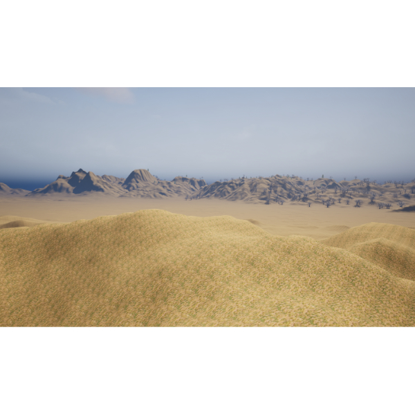

İnteraktif Dünya Haritası Üzerinde Öğrenme Deneyimi

Oyuna gitmek için resmin üzerine tıklayınız.
Bu proje, coğrafya dersi konularını oyunlaştırma yoluyla pekiştirmeyi amaçlayan interaktif bir web uygulamasıdır. Öğrenciler, dünya haritası üzerinde kıtaları, okyanusları ve ülkeleri bularak puan toplar ve eğlenerek öğrenirler.
Oyun, öğrencilerin mekânsal farkındalığını ve harita okuryazarlığı becerilerini geliştirmek için tasarlanmıştır. Her doğru cevapta puan kazanılırken, yanlış cevaplarda ise doğru konum gösterilerek anında geri bildirim sağlanır.
Tıklanabilir ve keşfedilebilir dünya haritası.
Doğru cevaplarla puan toplayarak rekabet etme imkanı.
Yanlış cevaplarda doğru konumu göstererek kalıcı öğrenme.
Tüm cihazlarda (telefon, tablet, bilgisayar) sorunsuz çalışır.